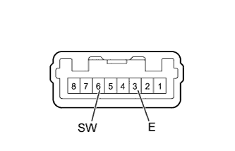

СИСТЕМА КОНДИЦИОНИРОВАНИЯ (для моделей с кондиционером с ручным управлением) > Цепь выключателя повышения частоты вращения коленчатого вала на холостом ходу |
| 1.СНИМИТЕ ПОКАЗАНИЯ ПОРТАТИВНОГО ДИАГНОСТИЧЕСКОГО ПРИБОРА (ВЫКЛЮЧАТЕЛЬ ПОВЫШЕНИЯ ЧАСТОТЫ ВРАЩЕНИЯ КОЛЕНЧАТОГО ВАЛА НА ХОЛОСТОМ ХОДУ) |
В режиме Data List проверьте работоспособность выключателя повышения частоты вращения коленчатого вала на холостом ходу (Нажмите здесь).
| Информация на дисплее прибора | Измеряемая величина / диапазон измерения | Нормальное состояние | Замечание по диагностике |
| IDLE UP/PWR HEAT Switch | Выключатель повышения частоты вращения коленчатого вала на холостом ходу / ON (ВКЛ) или OFF (ВЫКЛ) | ON (ВКЛ): Выключатель повышения частоты вращения коленчатого вала на холостом ходу включен OFF (ВЫКЛ): Выключатель повышения частоты вращения коленчатого вала на холостом ходу выключен | - |
|
| ||||
| OK | ||
| ||
| 2.ПРОВЕРЬТЕ ВЫКЛЮЧАТЕЛЬ ПОВЫШЕНИЯ ЧАСТОТЫ ВРАЩЕНИЯ КОЛЕНЧАТОГО ВАЛА НА ХОЛОСТОМ ХОДУ |
|  |
Снимите выключатель повышения частоты вращения коленчатого вала на холостом ходу (Нажмите здесь).
Измерьте сопротивление в соответствии со значениями, приведенными в таблице ниже.
| Контакты для подключения диагностического прибора | Положение переключателя | Заданные условия |
| 6 (SW) - 3 (E) | Выключатель повышения частоты вращения коленчатого вала на холостом ходу включен | Менее 1 Ом |
| 6 (SW) - 3 (E) | Выключатель повышения частоты вращения коленчатого вала на холостом ходу выключен | 10 кОм или более |
|
| ||||
| OK | |
| 3.ПРОВЕРЬТЕ ЖГУТ ПРОВОДОВ И РАЗЪЕМ (ВЫКЛЮЧАТЕЛЬ ПОВЫШЕНИЯ ЧАСТОТЫ ВРАЩЕНИЯ КОЛЕНЧАТОГО ВАЛА НА ХОЛОСТОМ ХОДУ - БЛОК УПРАВЛЕНИЯ СИСТЕМОЙ КОНДИЦИОНИРОВАНИЯ И МАССА) |
Отсоедините разъем выключателя G20.
Отсоедините разъем G25 блока управления.
Измерьте сопротивление в соответствии со значениями, приведенными в таблице ниже.
| Контакты для подключения диагностического прибора | Условие | Заданные условия |
| G20-6 (SW) - G25-36 (SWVC) | Всегда | Менее 1 Ом |
| G20-3 (E) - масса | Всегда | Менее 1 Ом |
| G25-36 (SWVC) - масса | Всегда | 10 кОм или более |
|
| ||||
| OK | ||
| ||